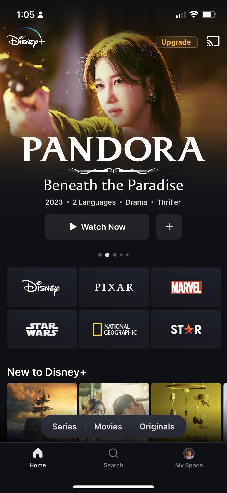
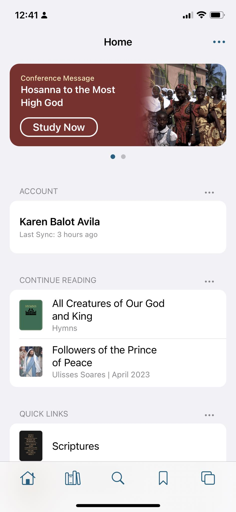

Contrast
Disney+
https://www.apps.disneyplus.com/ph/onboarding This site shows the contrast principle. The website has black background color and the texts and images in white. Logos of the movie contributor retained its original and manifest an emphasis. The contrast design is very legible and the site used it well.
White Space and Clean Design
This site used the design principle in a very balanced manner. The area between the elements are good and aesthetically designed.
Visual Hierarchy
The Church of Jesus Christ of Latter-Day Saints
https://www.churchofjesuschrist.org/?lang=eng The site arranges the elements in the most recent Church activity and also the last activity the user had done to the application.